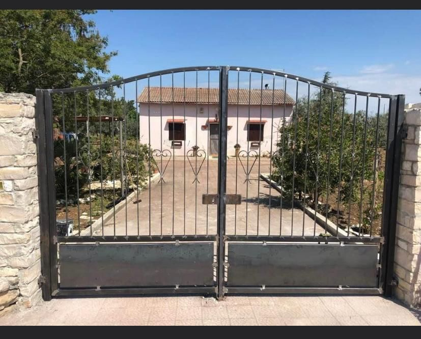

Fabbro e Serramenti
Infissi, portoncini, cancelli e ringhiere realizzati su misura, con la cura e la precisione del lavoro artigianale.
Chi siamo
Fabbro e Serramenti De Ceglia - De Pinto realizza e installa infissi, portoncini, cancelli e ringhiere su misura, curando ogni fase del lavoro: dal sopralluogo alla progettazione, fino alla posa in opera.
Lavoriamo alluminio, PVC e ferro battuto per offrire soluzioni solide, sicure e su misura per la tua casa o attivita, con un occhio attento ai dettagli e alla qualita dei materiali.

Cosa facciamo
Ogni lavoro e progettato e realizzato su misura, per rispondere davvero alle esigenze della tua casa.
Finestre, portefinestre e persiane in alluminio e PVC, su misura per isolamento e sicurezza.
Ingressi sicuri, robusti ed esteticamente curati per la tua abitazione o attivita.
Ferro battuto classico o alluminio dal design moderno, motorizzabili su richiesta.
Balaustre, inferriate e recinzioni di design per interni ed esterni.
Chiusure panoramiche in alluminio per vivere i tuoi spazi esterni tutto l'anno.
I nostri lavori
Una selezione dei lavori realizzati. Puoi filtrare per tipologia.
Caricamento galleria...
Contatti
Raccontaci il tuo progetto: ti risponderemo al piu presto con un preventivo su misura.